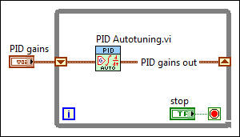
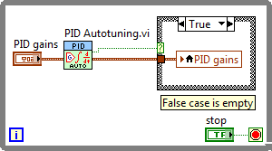

The PID autotuning VIs, including PID Autotuning, PID Advanced Autotuning, and PID Online Autotuning, calculate new parameters for a PID controller that result in the best response. When autotuning, you must write your code to apply the new PID controller parameters (the PID gains) when the autotuning is complete.
You can use the following methods to update PID parameters after autotuning.
|
Note��In both of the following methods, you must manually save the PID gains so that you can use the PID gains out values the next time you run the control application. Ensure that the PID gains control shows the current updated parameters, select Operate�Make Current Values Default, and save the VI. If you do not want to manually save the VI after each run, you can use a datalog file to save PID gains values. |
The following block diagram shows a simple implementation of using shift registers to update PID parameters in the PID Autotuning VI. The shift register on the left stores the initial value of the PID gains. PID gains out then passes an updated value to the right-hand shift register terminal when each control loop iteration completes. This method is simple, but limited in that the user cannot change PID gains manually while the control loop runs.

In place of shift registers, you can use a local variable to store updated PID gains values. In the following block diagram, PID Autotuning VI reads the PID gains control on each iteration of the While Loop, and a local variable updates the control only when tuning complete? is TRUE. This method allows for manual control of the PID gains while the control loop executes.
